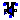
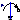
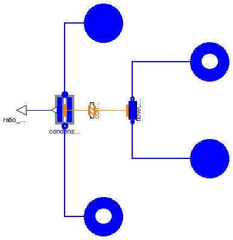
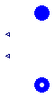
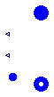
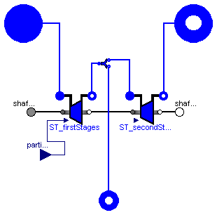
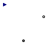

| Name | Description |
|---|---|
| Condenser | Condenser |
| CondenserPreP | Ideal condenser with prescribed pressure |
| CondenserPreP_tap | Ideal condenser with prescribed pressure and external tapping for ratio control |
| CondenserShell | |
| SteamTurbineVarEta | Steam turbine with variable efficiency |
|  SteamTurbine_1tapping | Turbine with one tapping |
| EffectHE | Effect of ideal HE |
| Comp_bubble_h | Computation Specific enthalpy of saturated liquid, imposted pressure |
|  PrescribedSpeed | External imposed Speed |
| Base reader for the visualization of the state in the simulation (water) | |
| State reader for the visualization of the state in the simulation (water) |

| Type | Name | Default | Description |
|---|---|---|---|
| replaceable package FluidMedium | ThermoPower.Water.StandardWa... | ||
| MassFlowRate | condNomFlowRate | Nominal flow rate through the condensing fluid side [kg/s] | |
| MassFlowRate | coolNomFlowRate | Nominal flow rate through the cooling fluid side [kg/s] | |
| Pressure | condNomPressure | Nominal pressure in the condensing fluid side inlet [Pa] | |
| Pressure | coolNomPressure | Nominal pressure in the cooling fluid side inlet [Pa] | |
| Integer | N_cool | 2 | Number of node of the cooling fluid side |
| Area | condExchSurface | Exchange surface between condensing fluid - metal [m2] | |
| Area | coolExchSurface | Exchange surface between metal - cooling fluid [m2] | |
| Volume | condVol | Condensing fluid volume [m3] | |
| Volume | coolVol | Cooling fluid volume [m3] | |
| Volume | metalVol | Volume of the metal part in the tubes [m3] | |
| SpecificHeatCapacity | cm | Specific heat capacity of metal [J/(kg.K)] | |
| Density | rhoMetal | Density of metal [kg/m3] | |
| CoefficientOfHeatTransfer | gamma_cond | Coefficient of heat transfer on condensation surfaces [W/(m2.K)] | |
| CoefficientOfHeatTransfer | gamma_cool | Coefficient of heat transfer of cooling fluid side [W/(m2.K)] | |
| Temp | FFtype_cool | Choices.Flow1D.FFtypes.NoFri... | Friction Factor Type |
| Temp | HCtype_cool | Choices.Flow1D.HCtypes.Downs... | Location of the hydraulic capacitance |
| Pressure | dpnom_cool | 0 | Nominal pressure drop (friction term only!) [Pa] |
| Density | rhonom_cool | 0 | Nominal inlet density [kg/m3] |
| Initialization Conditions | |||
| Boolean | use_T | true | Select: -true- to insert the initial temperature or -false- to insert the initial specifc enthalpy of the cooling fluid side |
| Boolean | SSInit | false | Steady-state initialization |
| Initialization | |||
| Pressure | pstart_cond | condNomPressure | Condensing fluid pressure start value [Pa] |
| Volume | Vlstart_cond | condVol*0.15 | Start value of the liquid water volume, condensation side [m3] |
| Temperature | Tstart_M_in | Inlet metal wall temperature start value [K] | |
| Temperature | Tstart_M_out | Outlet metal wall temperature start value [K] | |
| Temperature | Tstart_M[N_cool] | linspace(Tstart_M_in, Tstart... | Start value of metal wall temperature vector (initialized by default) [K] |
| Temperature | Tstart_cool_in | FluidMedium.temperature_ph(c... | Inlet cooling fluid temperature start value [K] |
| Temperature | Tstart_cool_out | FluidMedium.temperature_ph(c... | Outlet cooling fluid temperature start value [K] |
| Temperature | Tstart_cool[N_cool] | linspace(Tstart_cool_in, Tst... | Start value of cooling fluid temperature vector (initialized by default) [K] |
| SpecificEnthalpy | hstart_cool_in | FluidMedium.specificEnthalpy... | Inlet cooling fluid specific enthalpy start value [J/kg] |
| SpecificEnthalpy | hstart_cool_out | FluidMedium.specificEnthalpy... | Outlet cooling fluid specific enthalpy start value [J/kg] |
| SpecificEnthalpy | hstart_cool[N_cool] | linspace(hstart_cool_in, hst... | Start value of cooling fluid enthalpy vector (initialized by default) [J/kg] |
| Pressure | pstartin_cool | coolNomPressure | Inlet cooling fluid pressure start value [Pa] |
| Pressure | pstartout_cool | coolNomPressure - dpnom_cool | Outlet cooling fluid pressure start value [Pa] |
| Type | Name | Description |
|---|---|---|
| FlangeB | waterOut | |
| FlangeA | coolingIn | |
| FlangeB | coolingOut | |
| FlangeA | steamIn | |
| output RealOutput | ratio_VvonVtot |
model Condenser "Condenser"
extends Interfaces.Condenser(pstartout_cool=coolNomPressure-dpnom_cool);
parameter SI.CoefficientOfHeatTransfer gamma_cond
"Coefficient of heat transfer on condensation surfaces";
parameter SI.CoefficientOfHeatTransfer gamma_cool
"Coefficient of heat transfer of cooling fluid side";
parameter Choices.Flow1D.FFtypes.Temp FFtype_cool = Choices.Flow1D.FFtypes.NoFriction
"Friction Factor Type";
parameter Choices.Flow1D.HCtypes.Temp HCtype_cool = Choices.Flow1D.HCtypes.Downstream
"Location of the hydraulic capacitance";
parameter SI.Pressure dpnom_cool=0
"Nominal pressure drop (friction term only!)";
parameter Density rhonom_cool=0 "Nominal inlet density";
//other data
constant Real pi=Modelica.Constants.pi;
Water.Flow1D flowCooling(
Nt=1,
initOpt=if SSInit then Options.steadyState else Options.noInit,
redeclare package Medium = FluidMedium,
L=coolExchSurface^2/(coolVol*pi*4),
A=(coolVol*4/coolExchSurface)^2/4*pi,
omega=coolVol*4/coolExchSurface*pi,
Dhyd=coolVol*4/coolExchSurface,
wnom=coolNomFlowRate,
pstartin=pstartin_cool,
pstartout=pstartout_cool,
hstart=hstart_cool,
N=N_cool,
FFtype=FFtype_cool,
dpnom=dpnom_cool,
rhonom=rhonom_cool,
HydraulicCapacitance=HCtype_cool,
hstartin=hstart_cool_in,
hstartout=hstart_cool_out);
Thermal.ConvHT convHT(
Tstart1=Tstart_M,
gamma=gamma_cool,
N=N_cool,
Tstart2=Tstart_cool,
Tstart11=Tstart_M_in,
Tstart1N=Tstart_M_out,
Tstart21=Tstart_cool_in,
Tstart2N=Tstart_cool_out);
CondenserShell condenserShell(
redeclare package Medium = FluidMedium,
V=condVol,
Mm=metalVol*rhoMetal,
Ac=condExchSurface,
Af=coolExchSurface,
cm=cm,
hc=gamma_cond,
Nc=N_cool,
pstart=pstart_cond,
Vlstart=Vlstart_cond,
initOpt=if SSInit then Options.steadyState else Options.noInit);
Modelica.Blocks.Interfaces.RealOutput ratio_VvonVtot;
equation
connect(flowCooling.infl, coolingIn);
connect(flowCooling.outfl, coolingOut);
connect(convHT.side2,flowCooling. wall);
connect(condenserShell.steam, steamIn);
connect(condenserShell.condensate, waterOut);
connect(condenserShell.coolingFluid,convHT. side1);
connect(condenserShell.ratio_VvVtot, ratio_VvonVtot);
end Condenser;

| Type | Name | Default | Description |
|---|---|---|---|
| Pressure | p | Nominal inlet pressure [Pa] | |
| Volume | Vtot | 10 | Total volume of the fluid side [m3] |
| Volume | Vlstart | 0.15*Vtot | Start value of the liquid water volume [m3] |
| Type | Name | Description |
|---|---|---|
| FlangeA | steamIn | |
| FlangeB | waterOut | |
| output RealOutput | Qcond | |
| output RealOutput | ratio_Vv_Vtot |
model CondenserPreP "Ideal condenser with prescribed pressure"
replaceable package Medium = Water.StandardWater extends
Modelica.Media.Interfaces.PartialMedium "Medium model";
//Parameters
parameter SI.Pressure p "Nominal inlet pressure";
parameter SI.Volume Vtot = 10 "Total volume of the fluid side";
parameter SI.Volume Vlstart = 0.15*Vtot
"Start value of the liquid water volume";
//Variable
SI.Density rhol "Density of saturated liquid";
SI.Density rhov "Density of saturated steam";
Medium.SaturationProperties sat "Saturation properties";
Medium.SpecificEnthalpy hl "Specific enthalpy of saturated liquid";
SI.Mass M "Total mass, steam+liquid";
SI.Mass Ml "Liquid mass";
SI.Mass Mv "Steam mass";
SI.Volume Vl(start=Vlstart) "Liquid volume";
SI.Volume Vv "Steam volume";
SI.Energy E "Internal energy";
SI.Power Q "Thermal power";
//Connectors
Water.FlangeA steamIn( redeclare package Medium = Medium);
Water.FlangeB waterOut( redeclare package Medium = Medium);
Modelica.Blocks.Interfaces.RealOutput Qcond;
Modelica.Blocks.Interfaces.RealOutput ratio_Vv_Vtot;
equation
steamIn.p = p;
steamIn.hAB = hl;
sat.psat = p;
sat.Tsat = Medium.saturationTemperature(p);
hl = Medium.bubbleEnthalpy(sat);
waterOut.p = p;
waterOut.hBA = hl;
rhol = Medium.bubbleDensity(sat);
rhov = Medium.density_ph(steamIn.p,steamIn.hBA);
Ml = Vl*rhol;
Mv = Vv*rhov;
Vtot= Vv+Vl;
M = Ml + Mv;
E = Ml*hl + Mv*steamIn.hBA - p*Vtot;
//Energy and Mass Bilances
der(M) = steamIn.w + waterOut.w;
der(E) = steamIn.w*steamIn.hBA + waterOut.w*hl - Q;
//Output signal
ratio_Vv_Vtot=Vv/Vtot;
Qcond = Q;
end CondenserPreP;

| Type | Name | Default | Description |
|---|---|---|---|
| Pressure | p | Nominal inlet pressure [Pa] | |
| Volume | Vtot | 10 | Total volume of the fluid side [m3] |
| Volume | Vlstart | 0.15*Vtot | [m3] |
| Type | Name | Description |
|---|---|---|
| FlangeA | steamIn | |
| FlangeB | waterOut | |
| output RealOutput | Qcond | |
| output RealOutput | ratio_Vv_Vtot | |
| FlangeA | tapWater |
model CondenserPreP_tap
"Ideal condenser with prescribed pressure and external tapping for ratio control"
replaceable package Medium = ThermoPower.Water.StandardWater extends
Modelica.Media.Interfaces.PartialTwoPhaseMedium;
parameter SI.Pressure p "Nominal inlet pressure";
parameter SI.Volume Vtot = 10 "Total volume of the fluid side";
parameter SI.Volume Vlstart = 0.15*Vtot;
SI.Density rhol "Density of saturated liquid";
SI.Density rhov "Density of saturated steam";
Medium.SaturationProperties sat "Saturation properties";
Medium.SpecificEnthalpy hl "Specific enthalpy of saturated liquid";
SI.Mass M "Total mass, steam+liquid";
SI.Mass Ml "Liquid mass";
SI.Mass Mv "Steam mass";
SI.Volume Vl(start=Vlstart) "Liquid volume";
SI.Volume Vv "Steam volume";
SI.Energy E "Internal energy";
SI.Power Q "Thermal power";
Water.FlangeA steamIn( redeclare package Medium = Medium);
Water.FlangeB waterOut( redeclare package Medium = Medium);
Modelica.Blocks.Interfaces.RealOutput Qcond;
Modelica.Blocks.Interfaces.RealOutput ratio_Vv_Vtot;
Water.FlangeA tapWater(redeclare package Medium = Medium);
equation
steamIn.p = p;
steamIn.hAB = hl;
sat.psat = p;
sat.Tsat = Medium.saturationTemperature(p);
hl = Medium.bubbleEnthalpy(sat);
waterOut.p = p;
waterOut.hBA = hl;
rhol = Medium.bubbleDensity(sat);
rhov = Medium.density_ph(steamIn.p,steamIn.hBA);
hl=tapWater.hAB;
tapWater.p=p;
Ml = Vl*rhol;
Mv = Vv*rhov;
Vtot= Vv + Vl;
M = Ml + Mv;
E = Ml*hl + Mv*steamIn.hBA - p*Vtot;
//Energy and Mass Bilances
der(M) = steamIn.w + (waterOut.w + tapWater.w);
der(E) = steamIn.w*steamIn.hBA + (waterOut.w + tapWater.w)*hl - Q;
//Output signal
ratio_Vv_Vtot = Vv/Vtot;
Qcond = Q;
end CondenserPreP_tap;
| Type | Name | Default | Description |
|---|---|---|---|
| Volume | V | Total volume of condensation cavity [m3] | |
| Mass | Mm | Total mass of shell and tubes [kg] | |
| Area | Ac | Area of condensation surfaces [m2] | |
| Area | Af | Area of contact with the cooling fluid [m2] | |
| CoefficientOfHeatTransfer | hc | Coefficient of heat transfer on condensation surfaces [W/(m2.K)] | |
| SpecificHeatCapacity | cm | Specific heat capacity of the metal [J/(kg.K)] | |
| Integer | Nc | 2 | Number of nodes for coolingFluid connector |
| Initialisation | |||
| Pressure | pstart | Pressure start value [Pa] | |
| Volume | Vlstart | Start value of the liquid water volume [m3] | |
| Temp | initOpt | ThermoPower.Choices.Init.Opt... | Initialisation option |
| Type | Name | Description |
|---|---|---|
| FlangeA | steam | |
| FlangeB | condensate | |
| DHT | coolingFluid | |
| output RealOutput | ratio_VvVtot |
model CondenserShell
replaceable package Medium =
Modelica.Media.Interfaces.PartialTwoPhaseMedium "Medium model";
parameter SI.Volume V "Total volume of condensation cavity";
parameter SI.Mass Mm "Total mass of shell and tubes";
parameter SI.Area Ac "Area of condensation surfaces";
parameter SI.Area Af "Area of contact with the cooling fluid";
parameter SI.CoefficientOfHeatTransfer hc
"Coefficient of heat transfer on condensation surfaces";
parameter SI.SpecificHeatCapacity cm "Specific heat capacity of the metal";
parameter Integer Nc = 2 "Number of nodes for coolingFluid connector";
parameter SI.Pressure pstart "Pressure start value";
parameter SI.Volume Vlstart "Start value of the liquid water volume";
parameter ThermoPower.Choices.Init.Options.Temp initOpt=ThermoPower.Choices.Init.Options.noInit
"Initialisation option";
SI.Mass Ml "Liquid water mass";
SI.Mass Mv "Steam mass";
SI.Mass M "Total liquid+steam mass";
SI.Energy E "Total liquid+steam energy";
SI.Energy Em "Total energy of metal masses";
SI.Volume Vl(start=Vlstart, stateSelect = StateSelect.prefer)
"Liquid water total volume";
SI.Volume Vv "Steam volume";
Medium.SaturationProperties sat "Saturation properties";
Medium.AbsolutePressure p(start=pstart,stateSelect=StateSelect.prefer)
"Drum pressure";
Medium.MassFlowRate ws "Steam mass flowrate";
Medium.MassFlowRate wc "Condensate mass flowrate";
SI.HeatFlowRate Qcool "Heat flow from the metal to the cooling fluid";
SI.HeatFlowRate Qcond "Heat flow from the condensing fluid to the metal";
Medium.SpecificEnthalpy hs "Specific enthalpy of entering steam";
Medium.SpecificEnthalpy hl "Specific enthalpy of saturated liquid";
Medium.SpecificEnthalpy hv "Specific enthalpy of saturated steam";
Medium.Temperature Ts "Saturation temperature";
Medium.Temperature Tm(start = Medium.saturationTemperature(pstart), stateSelect = StateSelect.prefer)
"Average temperature of metal walls";
Medium.Density rhol "Density of saturated liquid";
Medium.Density rhov "Density of saturated steam";
ThermoPower.Water.FlangeA steam(redeclare package Medium = Medium);
ThermoPower.Water.FlangeB condensate(redeclare package Medium = Medium);
ThermoPower.Thermal.DHT coolingFluid(N=Nc);
Modelica.Blocks.Interfaces.RealOutput ratio_VvVtot;
equation
Ml=Vl*rhol "Mass of liquid";
Mv=Vv*rhov "Mass of vapour";
M=Ml+Mv "Total mass";
V = Vl + Vv "Total volume";
E=Ml*hl+Mv*hv-p*V "Total liquid+steam energy";
Em = Mm*cm*Tm "Metal tubes energy";
der(M) = ws - wc "Mass balance";
der(E) = ws*hs - wc*hl - Qcond "Energy balance (liquid+steam)";
der(Em) = Qcond - Qcool "Energy balance (metal tubes)";
Qcond = hc*Ac*(Ts - Tm);
// Boundary conditions
p = steam.p;
p = condensate.p;
ws = steam.w;
hs = steam.hBA "Flow reversal not supported";
steam.hAB = hv;
wc = -condensate.w;
condensate.hBA = hl;
Qcool = -Af/Nc*sum(coolingFluid.phi);
coolingFluid.T = ones(Nc)*Tm;
// Fluid properties
// sat = Medium.setSat_p(p);
sat.psat = p;
sat.Tsat = Medium.saturationTemperature(p);
Ts = sat.Tsat;
rhol=Medium.bubbleDensity(sat);
rhov=Medium.dewDensity(sat);
hl=Medium.bubbleEnthalpy(sat);
hv=Medium.dewEnthalpy(sat);
ratio_VvVtot=Vv/V;
initial equation
if initOpt == ThermoPower.Choices.Init.Options.noInit then
// do nothing
elseif initOpt == ThermoPower.Choices.Init.Options.steadyState then
der(M) = 0;
der(E) = 0;
else
assert(false, "Unsupported initialisation option");
end if;
end CondenserShell;

| Type | Name | Default | Description |
|---|---|---|---|
| replaceable package Medium | ThermoPower.Water.StandardWa... | Medium model | |
| Boolean | explicitIsentropicEnthalpy | true | Outlet enthalpy computed by isentropicEnthalpy function |
| MassFlowRate | wnom | Inlet nominal flowrate [kg/s] | |
| Real | eta_mech | 0.98 | Mechanical efficiency |
| Area | Kt | Kt coefficient of Stodola's law [m2] | |
| Real | eta_iso_nom | 0.92 | Nominal isentropic efficiency |
| Real | x | 0.5 | Degree of reaction |
| Length | Rm | Mean ray [m] | |
| Integer | n | Number of stages | |
| Initialisation | |||
| Pressure | pstart_in | Inlet pressure start value [Pa] | |
| Pressure | pstart_out | Outlet pressure start value [Pa] | |
| MassFlowRate | wstart | Mass flow rate start value [kg/s] | |
| SpecificEnthalpy | hstartin | Inlet enthalpy start value [J/kg] | |
| SpecificEnthalpy | hstartout | Outlet enthalpy start value [J/kg] | |
| Type | Name | Description |
|---|---|---|
| input RealInput | partialArc | |
| Flange_a | shaft_a | |
| Flange_b | shaft_b | |
| FlangeA | inlet | |
| FlangeB | outlet |
model SteamTurbineVarEta "Steam turbine with variable efficiency"
extends ThermoPower.Water.SteamTurbineBase;
//Parameter
parameter SI.Area Kt "Kt coefficient of Stodola's law";
replaceable function curveEta_iso = Functions.curveEfficiency extends
ThermoPower.PowerPlants.SteamTurbineGroup.Functions
"Characteristich curve of efficiency";
parameter Real eta_iso_nom=0.92 "Nominal isentropic efficiency";
parameter Real x=0.5 "Degree of reaction";
parameter Length Rm "Mean ray";
parameter Integer n "Number of stages";
//Variable
Real y "Ratio uf/wiso";
Real uf "Mean peripheral velocity of the rotor";
Real viso "Mean velocity of the fluid in isentropic conditions";
equation
w = Kt*partialArc*sqrt(steam_in.p*steam_in.d)*ThermoPower.Functions.sqrtReg(1-(1/PR)^2)
"Stodola's law";
uf=omega*Rm;
viso=sqrt(2*(hin-hiso)/n);
y=uf/viso;
eta_iso = curveEta_iso(eta_iso_nom, y, x) "Variable efficiency";
end SteamTurbineVarEta;

| Type | Name | Default | Description |
|---|---|---|---|
| MassFlowRate | wn | Inlet nominal flowrate [kg/s] | |
| Area | Kt | Coefficient of Stodola's law [m2] | |
| Initialization | |||
| Pressure | pstart_in | Inlet pressure start value [Pa] | |
| Pressure | pstart_tap | Tapping pressure start value [Pa] | |
| Pressure | pstart_out | Outlet pressure start value [Pa] | |
| MassFlowRate | wstart | Mass flow rate start value [kg/s] | |
| SpecificEnthalpy | hstartin | Inlet enthalpy start value, [J/kg] | |
| SpecificEnthalpy | hstarttap | Tapping enthalpy start value, [J/kg] | |
| SpecificEnthalpy | hstartout | Outlet enthalpy start value [J/kg] | |
| Type | Name | Description |
|---|---|---|
| input RealInput | partialArc | |
| Flange_a | shaft_a | |
| Flange_b | shaft_b | |
| FlangeB | tap1 | |
| FlangeA | flangeA | |
| FlangeB | flangeB |
model SteamTurbine_1tapping "Turbine with one tapping"
replaceable package FluidMedium = ThermoPower.Water.StandardWater extends
Modelica.Media.Interfaces.PartialPureSubstance;
//Turbines parameters
parameter SI.MassFlowRate wn "Inlet nominal flowrate";
parameter SI.Area Kt "Coefficient of Stodola's law";
//Start Value
parameter SI.Pressure pstart_in "Inlet pressure start value";
parameter SI.Pressure pstart_tap "Tapping pressure start value";
parameter SI.Pressure pstart_out "Outlet pressure start value";
parameter SI.MassFlowRate wstart "Mass flow rate start value";
parameter SI.SpecificEnthalpy hstartin "Inlet enthalpy start value,";
parameter SI.SpecificEnthalpy hstarttap "Tapping enthalpy start value,";
parameter SI.SpecificEnthalpy hstartout "Outlet enthalpy start value";
Modelica.Blocks.Interfaces.RealInput partialArc;
Modelica.Mechanics.Rotational.Interfaces.Flange_a shaft_a;
Modelica.Mechanics.Rotational.Interfaces.Flange_b shaft_b;
Water.FlangeB tap1(redeclare package Medium = FluidMedium);
Water.SteamTurbineStodola ST_firstStages(
redeclare package Medium = FluidMedium,
pstart_in=pstart_in,
pstart_out=pstart_tap,
wstart=wstart,
hstartin=hstartin,
hstartout=hstarttap,
wnom=wn,
Kt=Kt);
Water.SteamTurbineStodola ST_secondStages(
redeclare package Medium = FluidMedium,
pstart_in=pstart_tap,
pstart_out=pstart_out,
wstart=wstart,
hstartin=hstarttap,
hstartout=hstartout,
wnom=wn,
Kt=Kt);
Water.FlowSplit flowSplit;
Water.FlangeA flangeA(redeclare package Medium = FluidMedium);
Water.FlangeB flangeB(redeclare package Medium = FluidMedium);
equation
connect(shaft_b, ST_secondStages.shaft_b);
connect(ST_secondStages.shaft_a, ST_firstStages.shaft_b);
connect(flowSplit.out1, ST_secondStages.inlet);
connect(flowSplit.out2, tap1);
connect(flangeA, ST_firstStages.inlet);
connect(flangeB, ST_secondStages.outlet);
connect(flowSplit.in1, ST_firstStages.outlet);
connect(partialArc, ST_firstStages.partialArc);
connect(ST_firstStages.shaft_a, shaft_a);
end SteamTurbine_1tapping;
| Type | Name | Default | Description |
|---|---|---|---|
| SpecificEnthalpy | dh | Increase of specific enthalpy [J/kg] | |
| Pressure | dp | Drop pressure [Pa] |
| Type | Name | Description |
|---|---|---|
| FlangeA | in1 | |
| FlangeB | out1 |
model EffectHE "Effect of ideal HE" extends Icons.Water.PressDrop; parameter SI.SpecificEnthalpy dh "Increase of specific enthalpy"; parameter SI.Pressure dp "Drop pressure"; Water.FlangeA in1; Water.FlangeB out1; equation out1.p = in1.p - dp; in1.w + out1.w = 0; in1.hAB + dh= out1.hAB; in1.hBA = out1.hBA - dh; end EffectHE;
| Type | Name | Default | Description |
|---|---|---|---|
| Pressure | p | Pressure value [Pa] |
| Type | Name | Description |
|---|---|---|
| output RealOutput | h |
model Comp_bubble_h
"Computation Specific enthalpy of saturated liquid, imposted pressure"
replaceable package FluidMedium = ThermoPower.Water.StandardWater extends
Modelica.Media.Interfaces.PartialTwoPhaseMedium;
parameter SI.Pressure p "Pressure value";
FluidMedium.SaturationProperties sat "Saturation properties";
SI.SpecificEnthalpy hl "Specific enthalpy of saturated liquid";
Modelica.Blocks.Interfaces.RealOutput h;
equation
sat.psat = p;
sat.Tsat = FluidMedium.saturationTemperature(p);
hl = FluidMedium.bubbleEnthalpy(sat);
//Output signal
h = hl;
end Comp_bubble_h;

Model of fixed angular verlocity of flange, not dependent on torque.
| Type | Name | Description |
|---|---|---|
| Flange_b | flange | Flange on which torque is acting |
| Flange_a | bearing | Bearing at which the reaction torque (i.e., -flange.tau) is acting |
| input RealInput | w_fixed |
model PrescribedSpeed "External imposed Speed" extends Modelica.Mechanics.Rotational.Interfaces.PartialSpeedDependentTorque; Modelica.Blocks.Interfaces.RealInput w_fixed; equation w = w_fixed; end PrescribedSpeed;
 ThermoPower.PowerPlants.SteamTurbineGroup.Components.BaseReader_water
ThermoPower.PowerPlants.SteamTurbineGroup.Components.BaseReader_water
This component can be inserted in a hydraulic circuit to measure the temperature of the fluid flowing through it.
Flow reversal is supported.
| Type | Name | Description |
|---|---|---|
| FlangeA | inlet | |
| FlangeB | outlet |
model BaseReader_water
"Base reader for the visualization of the state in the simulation (water)"
replaceable package Medium = Water.StandardWater extends
Modelica.Media.Interfaces.PartialPureSubstance "Medium model";
ThermoPower.Water.FlangeA inlet(redeclare package Medium = Medium);
ThermoPower.Water.FlangeB outlet(redeclare package Medium = Medium);
equation
inlet.w + outlet.w = 0 "Mass balance";
inlet.p = outlet.p "No pressure drop";
// Boundary conditions
inlet.hAB = outlet.hAB;
inlet.hBA = outlet.hBA;
end BaseReader_water;
ThermoPower.PowerPlants.SteamTurbineGroup.Components.StateReader_water
| Type | Name | Default | Description |
|---|---|---|---|
| replaceable package Medium | Water.StandardWater | Medium model | |
| Type | Name | Description |
|---|---|---|
| FlangeA | inlet | |
| FlangeB | outlet |
model StateReader_water "State reader for the visualization of the state in the simulation (water)" extends BaseReader_water; SI.Temperature T "Temperature"; SI.Pressure p "Pressure"; SI.SpecificEnthalpy h "Specific enthalpy"; SI.MassFlowRate w "Mass flow rate"; Medium.BaseProperties fluid; equation // Set fluid properties fluid.p=inlet.p; fluid.h = if inlet.w >= 0 then inlet.hBA else inlet.hAB; T=fluid.T; p=fluid.p; h=fluid.h; w=inlet.w; end StateReader_water;